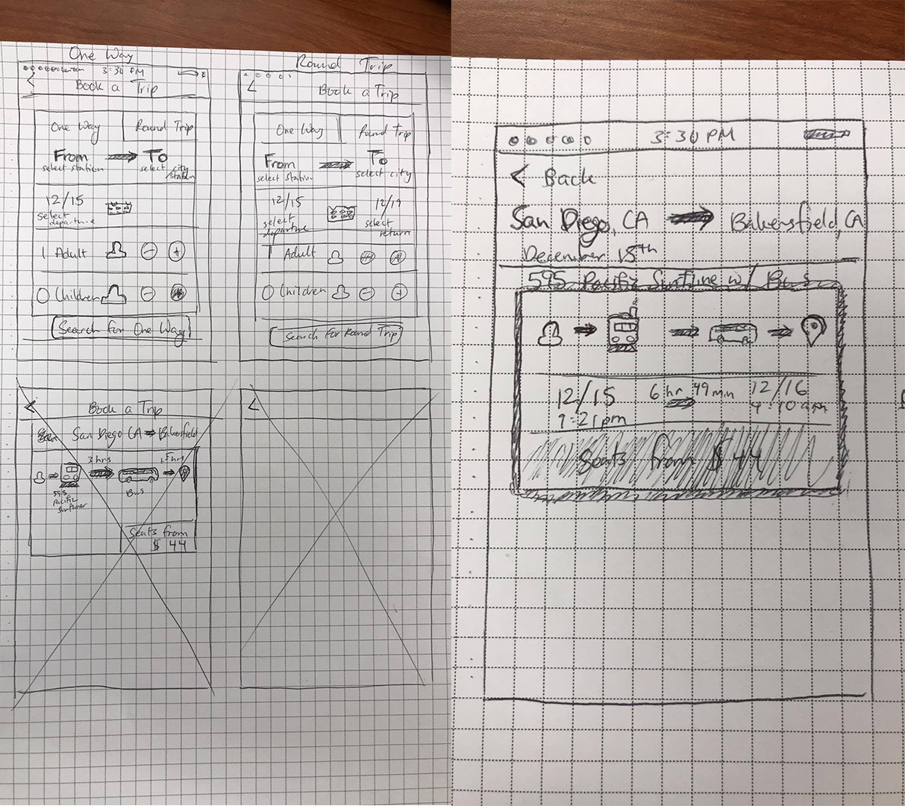

Amtrak.
Booking process redesign.

This was my final project for a usability and information architecture course. In groups of 4, we were tasked with redesigning a popular travel app or website. After downloading and testing several different apps, we found that Amtrak was the most confusing, and we came up with some initial thoughts on how to improve user flow. With so much information to organize, this proved to be a tough challenge, but finding key insights from comparitive analyses and testing helped us develop a prototype that enveloped many new concepts.
We tested several college students of varying backgrounds, but it boiled down to two major groups: those who have booked a train ride before, and those who haven't. Ideally, we wanted most of our findings to come from those who have not booked a train before, as they were perfect samples for first-time users. From our sample, we found that trains have seemingly become less prominent. With popular ridesharing alternatives in the college community, less and less people have needed to take trains. People were confused by the amount of information packed into the app, to the point where none of it made sense to them. Every one of our participants stated confusion about what amenities each train offered, and even what was considered an "amenity." Our primary challenge was to find a way to reorganize this information without getting rid of it. An important takeaway was that, most of these people have used other transportation apps, such as Uber, Lyft, AirBNB, and various airline apps. We kept this in mind when going into our competitive analyses, focusing on different airline apps, as those are most similar to train apps.
A majority of our interviewees claimed that they primarily fly with Southwest Airlines, because it is the cheapest getting around the west coast, where they reside. Unfortunately, the Southwest app is only rated 3/5 stars on the app store. For this reason, we chose to use the Southwest app as a baseline, and compare it to an extremely popular flight watching app, Hopper.
Hopper utilizes color and a simple layout that makes everything intuitive and easy to comprehend, while Southwest uses a straightforward design with many prompts. Although Hopper has better reviews, this may be due to the fact that it simply has less information to display, as it requires less user inputs. Nonetheless, we found that both of the apps share similar characteristics in the booking process, such as choosing travel dates through the view of a calendar. We decided that we would attempt to incorporate some major pieces from each app into the redesigned Amtrak app, while maintaining the company brand.
We began to make some quick sketches of concepts that we had in mind, such as the calendar booking and first few intro screens. We went with more graphical representations for parts like the calendar and timeline, as those are much easier to comprehend than several strings of numbers. We were highly influenced by Southwest in these portions, but incorporating the information architecture of Amtrak made it difficult. The Amtrak app provides a lot of information to its users, which is what makes it complicated for people to comprehend. That's what we had the most trouble with, was deciding what information was absolutely necessary, and what we can store away through a click or two. Our sketches were pretty rough, leaving this for the more refined wireframes.
We came up with a design that was heavily influenced by Southwest, Hopper, and the remarks of our users. As a group, we made two extreme opposites regarding simplicity. I made a more complex prototype with many options, taking a more Southwest side, while my teammate created a simpler, Hopper-influenced design. I felt it was important to keep the information as close to the surface as possible, while my teammate felt that only the very most important aspects were worth keeping surface-level. Below is a gallery of a few of my wireframes.
For apps with so much information to present, it's hard to draw the line between making something simplistic and modern that looks very aesthetically pleasing, and something that makes the information you need easily accessible. In more modern apps, they typically go with the former, which, in hindsight, I think would work just as well as the wireframes I made, if not better. It's really interesting to see how information architecture can be manipulated in such ways that simplify and complicate things at the same time.